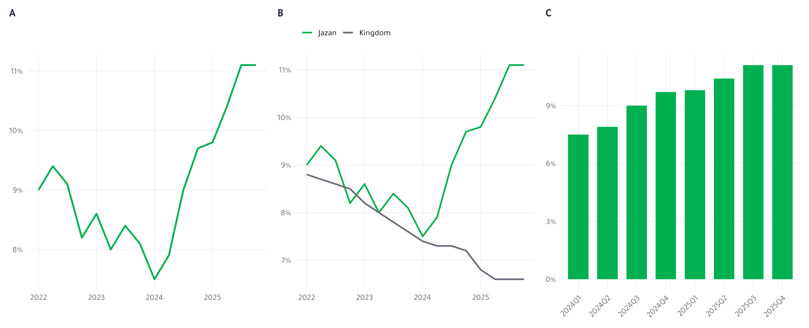

The Bulletin
Reproducible Statistical Reporting with Quarto — Day 1
2026-09-23
DAY 1 · 09:00–14:00
One finished product. Everything else is how it got made.
Do not introduce yourself yet. Open the finished bulletin first — slide 2. The room should see the product before they hear a name or an agenda.
THE REVEAL
Open artifacts/bulletin/bulletin-minimal.html now. Do not explain it.
Five minutes, live. Scroll the bulletin. Point at the headline, the two charts, the table, the callout. Say nothing about how it was made.
Then open bulletin-minimal.qmd. It is 75 lines. Let the silence do the work.
Then: “Four moves got us from this to that. That is the whole of today.”
Change REGION <- "Jazan" to "Riyadh" at the top of the setup chunk, re-render, and show that every number in the prose has moved. That single demo is the argument for the entire course.
One file, one constant. Tomorrow that constant becomes a parameter — do not say so yet.
Today
Block 1
Two kinds of analysis, and why Quarto
Block 2
What a document is made of
Block 3
Figures, tables, references
By 14:00 you will have a bulletin that re-renders when the data changes.
Machine not working? The setup check is the last slide.
BLOCK 1 · 09:00–10:15
The report is not the analysis
By the end of this block they can state in one sentence the argument a bulletin makes, and say why Quarto is the layer that publishes it reproducibly.
The re-run test
Your manager asks for Q3 instead of Q2. How long?
If the answer is days
Numbers are copied by hand. Somebody re-checks them. Somebody misses one.
If the answer is minutes
The pipeline is the document. Nothing is re-checked because nothing was retyped.
Ask the question and wait. Let someone in the room say “a week.”
Then the costs, by name: copy-paste drift. The 11pm correction before publication. The number nobody can trace to a line of code.
RAP — Reproducible Analytical Pipelines — is the UK statistical service’s answer, and it has levels: baseline, silver, gold. Ask the room where they think GASTAT sits today. Do not answer for them.
Why Quarto, specifically
RAP is code, version control, a reproducible environment, no manual steps. Quarto is RAP’s publishing layer.
One source → HTML, Word, PDF, slides, dashboard. The reviewer’s format and the published format come from the same file.
Language-agnostic — the Python teams share one toolchain and one house style.
_brand.yml makes institutional identity a file, not a habit. It survives staff turnover.Typst renders PDF with no LaTeX install. On an air-gapped box that is the whole game.
Against Word, one line: the number you typed is not the number you computed.
Seven minutes. Four claims, one line each. Do not linger — the next slide is the one that earns their trust.
What Quarto does not do
Quarto does not make your analysis reproducible.
renv and version control do that. Quarto makes the report reproducible — the step from a finished analysis to the thing the public reads.
Your code is still your responsibility
Your environment is still renv’s job
Your history is still git’s job
Three minutes, and say the first line out loud rather than reading it off the slide.
Claiming less here buys credibility for the rest of the three days. Somebody in this room has been burned by a tool that promised everything.
We come back to this on Day 2, when git gets named as the gap it is.
You made forty charts
Let it sit for a beat before saying anything.
“You made these. All of them are real, all from the same data. Two of them go to the minister.”
Say only: “You made these. All of them are real, all from the same data. Two of them go to the minister.”
Then move to the cull. Do not name exploratory or explanatory yet — that slide comes after, deliberately. Show first, name second.
Which one goes in?

Seven minutes, and most of it is them.
Three charts of the same indicator. Ask for a show of hands: A, B or C goes in the bulletin? Count the votes out loud.
Then ask two people on the losing side why. Do not adjudicate. The argument IS the teaching — attention budget, audience, what a chart has to earn.
If the room converges too fast, argue the other side yourself.
Exploratory and explanatory
Exploratory
For you. Fast, ugly, forty of them, disposable. Nobody else ever sees them.
Explanatory
For them. Slow, finished, two of them, load-bearing. Every one has to earn its place.
The bulletin has two charts. Choosing which two is the job.
Four minutes. Now name what they have just done: they culled forty to three, and three to one. That is the whole distinction, and they arrived at it before you said it.
The attention budget
Your manager gives the bulletin two minutes .
One headline they will repeat in a meeting
One chart they will screenshot
One number they will be asked about
Everything else is there for the person who doubts the three.
Planning heuristic, not a finding — say so. “Roughly 80 words, one chart, two minutes” is how we are choosing to design, not something measured at GASTAT.
Ask: who here has had a report read in front of them? What did they look at first?
The one-sentence big idea
What
The finding. One number, one comparison.
So what
Why it matters to the person reading.
Now what
What they should do, or watch, next.
Your turn: write the big idea for Jazan. One sentence. Eight minutes.
Give them the trend chart on screen while they write. Eight minutes, silently.
Then three volunteers read theirs aloud. For each, ask the room one question only: “would your manager act on that?”
Do not correct the sentences yourself. Let the room do it.
TAKEAWAY — BLOCK 1
The report is not the analysis. It is the argument the analysis licenses.
Read it once. Do not gloss it. Break.
Next: what a .qmd is actually made of.
BLOCK 2 · 10:30–11:45
One source. No manual numbers.
By the end of this block they can read and write the three parts of a .qmd, and locate a render failure by pipeline stage.
THE REVEAL
The same bulletin. Now open its source beside it.
Five minutes. Put bulletin-minimal.html and bulletin-minimal.qmd side by side on one screen.
Scroll the source once, slowly, without commentary. Seventy-five lines for the document they spent an hour arguing about.
Then: “Three things are in this file, and nothing else. Here they are.” Straight into the next slide.
Three things in every .qmd
--- title : "Labour Market Bulletin" # 1. YAML — the settings format : html --- `r REGION` stands at ... <!-- 2. prose --> ```{r} <- "Jazan" # 3. cells ggplot (trend, aes (date, rate)) + geom_line ()```
Point at each of the three in the open source as you name it. Nothing more abstract than that.
REGION <- "Jazan" is an ordinary constant in an ordinary chunk. Say nothing about parameters — tomorrow’s first move is promoting this one line, and it only lands if they have lived with the constant for a day.
Markdown that bites
A line break
Two spaces at the end, or a \
A footnote
Text[^1] then [^1]: The note.
Inline maths
$\bar{x} = 6.6$
Emphasis
*italic*, **bold**
Everything else is in templates/markdown-cheatsheet.qmd. Cross-references and tables are Block 3 — they need labels first.
Ten minutes, no more. This room writes markdown already — you are patching four specific holes, not teaching from zero.
The line break is the one that causes real anger. Everyone arrives expecting Word.
Footnotes matter because statistical bulletins live on them.
Where your document goes
Your .qmd does not become HTML. It becomes four other things first.
flowchart LR
A["bulletin.qmd"] --> B["knitr<br/>runs the R"]
Two boxes. knitr is the only thing that ever runs your R.
Ask: if ggplot throws an error, which arrow is it on? Wait for the answer.
Where your document goes
flowchart LR
A["bulletin.qmd"] --> B["knitr<br/>runs the R"]
B --> C["markdown<br/>plain text"]
knitr hands on plain markdown. Your code is gone by this point — the numbers are already text on a page.
Where your document goes
flowchart LR
A["bulletin.qmd"] --> B["knitr<br/>runs the R"]
B --> C["markdown<br/>plain text"]
C --> D["Pandoc<br/>converts"]
Pandoc has never heard of R. It reads markdown and YAML.
This is why a broken YAML key gives you a Pandoc error and not an R one.
Where your document goes
flowchart LR
A["bulletin.qmd"] --> B["knitr<br/>runs the R"]
B --> C["markdown<br/>plain text"]
C --> D["Pandoc<br/>converts"]
D --> E["HTML"]
One output. Before you add the next two, ask what else Pandoc could write from exactly this markdown. Let them name them.
Where your document goes
flowchart LR
A["bulletin.qmd"] --> B["knitr<br/>runs the R"]
B --> C["markdown<br/>plain text"]
C --> D["Pandoc<br/>converts"]
D --> E["HTML"]
D --> F["Word"]
Word, from the same markdown. That is Day 2’s whole first block, foreshadowed in one arrow.
Where your document goes
Errors belong to a stage. Find the stage, and you have found the error.
flowchart LR
A["bulletin.qmd"] --> B["knitr<br/>runs the R"]
B --> C["markdown<br/>plain text"]
C --> D["Pandoc<br/>converts"]
D --> E["HTML"]
D --> F["Word"]
D --> G["Typst → PDF"]
Draw this on the board as well as showing it. They will redraw it themselves later.
An R error is stage 2 — your code is wrong. A “pandoc: unknown option” is stage 4 — your YAML is wrong. A missing font is stage 5 — the output engine is wrong.
This diagram is what makes the break-it exercise on Day 2 tractable. Tell them it is coming.
Five cell options that earn their keep
#| label: fig-trend # names it — Block 3 uses the name #| fig-cap: "Jazan moved against the national trend" #| echo: false # run it, hide the code #| warning: false # hide the noise, not the errors #| eval: true # run it at all
label — the only one that changes what the reader can dofig-cap — the caption, which Block 3 argues aboutwarning + message — the noise floor
Press right five times: the highlight walks down the options one at a time. Narrate each one as it lights up.
Then live-code it. Start with a raw ggplot call, echo on, warnings on, no caption — ugly — and add the options until it looks like the bulletin.
Three kinds of hide
echo: falseyes
no
yes
eval: falseno yes
no
include: falseyes
no
no
echo is the one you want almost every time.
Five minutes. This is the part people get wrong, and getting it wrong is why their first bulletin has code in it.
echo: false for every figure in a published document. eval: false for a snippet you are showing but must not run. include: false for setup.
No number is typed
`r sprintf('%.1f%%', latest_rate)` `r latest_q` .Renders as:
Unemployment stands at 11.1% in 2025Q4 .
Change the data. The sentence changes. Nobody re-checks it.
The demo: change REGION from Jazan to Riyadh, re-render, and read the new sentence aloud. “Risen” became “fallen” without anybody editing prose.
This is the moment the course either lands or does not. Do it slowly.
TAKEAWAY — BLOCK 2
One source. No manual numbers. Nothing left to re-check.
Two captions, same chart
Descriptive caption
“Unemployment by region, 2025Q4”
Tells the reader what they are already looking at.
Message caption
“Jazan has the highest rate of any region”
Tells the reader what to conclude.
Your figure caption is the only sentence some readers will read.
Put three descriptive captions on the board from real GASTAT publications — or from the bulletin — and have the room rewrite them as message captions, out loud, together.
Fifteen minutes. This is the highest-value fifteen minutes of Day 1 and it needs no software.
Cross-references and the margin
@fig-, @tbl-, @sec- — numbering that never goes staleThe name comes from label in Block 2. That is what it was for
Renumbering is automatic; “see Figure 3 above” is not
Eight minutes. Pay off the label option they met an hour ago — it existed so this slide could work.
Add a figure above an existing one in the live bulletin and re-render. Every number moves, including the ones in the prose.
Where the doubt goes
## What this means
The line
The argument. The reader who trusts you stops here.
The margin
Method, caveats, the denominator. The reader who doubts you.
Seven minutes. Callouts carry the “so what”; the margin carries the “how do you know”.
Show the collapsed method note in the HTML bulletin — that is the pattern.
Name it: progressive disclosure. One document serves the trusting reader and the doubting one. They meet the idea again on Day 3, across vehicles.
Tables that survive the trip
tinytable because it is the one that reaches HTML, Word and Typst PDF from one call.
gtBeautiful in HTML. Weak in Word. No Typst path.
flextableExcellent in Word. No Typst path.
tinytableAll three, from one call.
Three minutes on the choice, then build one live — the next five slides are that build.
We picked the one that survives all three formats, because Day 2 is about one source reaching many formats.
If anyone uses gt today, say: keep using it for HTML-only work. Nothing here forbids it.
Building the house table
library (tinytable)tt (recent)
Quarter
Rate
2024Q3
9.0
2024Q4
9.7
2025Q1
9.8
2025Q2
10.4
2025Q3
11.1
2025Q4
11.1
The data as a table, in one call. It is already a table in HTML, Word and PDF — that is the whole reason we picked tinytable.
But it is Pandoc grey. Nothing about it says GASTAT.
Building the house table
library (tinytable)tt (recent) |> style_tt (i = 0 , bold = TRUE )
Quarter
Rate
2024Q3
9.0
2024Q4
9.7
2025Q1
9.8
2025Q2
10.4
2025Q3
11.1
2025Q4
11.1
i = 0 is the header row. Rows number from 1, so zero is the one above.
One line, and the header separates from the body.
Building the house table
library (tinytable)tt (recent) |> style_tt (i = 0 , bold = TRUE ,line = "b" )
Quarter
Rate
2024Q3
9.0
2024Q4
9.7
2025Q1
9.8
2025Q2
10.4
2025Q3
11.1
2025Q4
11.1
Building the house table
library (tinytable)tt (recent) |> style_tt (i = 0 , bold = TRUE ,line = "b" ,line_color = "#4137A8" )
Quarter
Rate
2024Q3
9.0
2024Q4
9.7
2025Q1
9.8
2025Q2
10.4
2025Q3
11.1
2025Q4
11.1
The brand indigo. On a slide it is typed; in a real document it is read from _brand.yml through R/course.R, never typed.
Four lines. Ask the room how many times they will write them this year.
Building the house table
library (tinytable)tt (recent) |> style_tt (i = 0 , bold = TRUE , line = "b" , line_color = "#4137A8" )
Quarter
Rate
2024Q3
9.0
2024Q4
9.7
2025Q1
9.8
2025Q2
10.4
2025Q3
11.1
2025Q4
11.1
In this project that already has a name: tt_gastat(recent), from R/course.R.
The reference version, unwrapped back to one call and unhighlighted. Photograph this one.
Then the punchline: R/course.R is sourced at the top of every lab file and every artifact, and it wraps exactly this as tt_gastat(). You write one line.
It also adds theme_html(portable = TRUE). Without that a tinytable fetches its CSS from a CDN when the page is opened , so on your machines the table arrives unstyled. Full width here rather than a column, because the unwrapped call is too long for half a slide.
TAKEAWAY — BLOCK 3
A caption is an argument, not a label.
Lab: your two pages
Open labs/lab1-start.qmd. Data is loaded, brand applied, R/course.R sourced — that is where tt_gastat(), fmt1() and synthetic_note() come from.
Build
Headline from your big idea · 2 figures with message captions · 1 tinytable · 1 callout
Rule
Every number inline. Nothing typed.
Done test · three checks
Your headline is the big idea you wrote at 09:40, naming one number and one comparison
Change REGION. Re-render. Every number moves
Cover the prose. Can a colleague follow your argument from the two captions alone?
Thirty-five minutes to build, ten for three volunteers to show.
Three checks, one per block. Check 1 is Block 1, check 2 is Block 2, check 3 is Block 3 — and check 3 is the same test you applied to the finished bulletin at 12:20. The lab closes what that reveal opened.
A bulletin that passes only check 2 renders correctly and argues nothing. Say that.
At minute 20, walk the room. At minute 30, if a third are stuck, stop everyone and say: “open lab1-solution.qmd and read it against your own file.” Nobody leaves without a rendered document.
TOMORROW
One bulletin becomes thirteen
Same file. One parameter. A folder of finished reports.
Do not preview the mechanism. Just the promise, then stop. They should leave wondering how.
Appendix — before we start
quarto check # Quarto, R, and the knitr engine :: restore () # the packages, from the internal mirror :: quarto_render ("artifacts/bulletin/bulletin.qmd" )If that last line produced a file, you are ready.
Ask for a show of hands. Fix problems now, not at 13:15. If more than three people are stuck, pair them with someone who is working — do not debug 20 machines from the front.